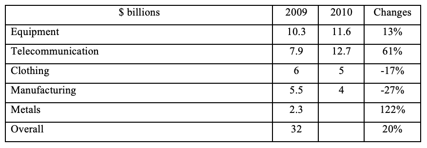

Task 1
You should spend about 20 minutes on this task.
The table below shows the changes in exports in billions 2009 and 2010.
Summarise the information by selecting and reporting the main features making comparisons where relevant.
Write at least 150 words.
Task 2
Write about the following topic:
You should spend about 40 minutes on this task.
It is important for everyone, including young people, to save money for
their future.
To what extent do you agree or disagree with this statement?
Give reasons for your answer and include any relevant examples from your own knowledge or experience.
Write at least 250 words.